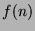
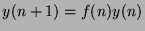

Usage
hypergeometricSolution L
Signature
hypergeometricSolution: RXE Partial Fraction FX
| Parameter | Type | Description |
|---|---|---|
| L | RXE | A linear ordinary recurrence operator |
Returns
Returns failed ifhas no hypergeometric solution over
, i.e.a solution
such that
is a fraction of polynomials in
. Otherwise, it returns  such that any solution of  is also a solution of
Remarks
Note that hypergeometricSolution does not attempt to return more than one hypergeometric solution, so if it finds one, there could be some others. In addition, a return value ofproves that there are no hypergeometric solutions over